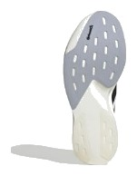
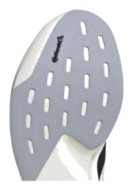

SPEED｜スピードトレーナー
カーボンなしで、この反発。
前足部のエネルギーリターン73.5%は、レースシューズに迫る数字である。それでいて実測223g、¥19,800。スピード部門17足中4位、コスパ点は4.5だった。ペースを上げる日の靴としては、数字の揃い方が抜けている。
週1回以上ペース走をする人。カーボンなしで速く走りたい人。2足目を探している人。
雨の日も走る人。ゆっくりしたジョグが中心の人。足のブレが気になる人。


衝撃吸収147SAはボメロ 18やクリフトン 10と同じである。そのうえで実測223g。軽い靴でクッションを諦めなくていい。
フォーム硬度は43.5ACと硬めで、曲げ剛性は9.8Nと低い。カーボン靴のような強い推進感ではなく、硬いフォーム自体の反発で走る靴である。
摩耗深度は0.6mmで、推定寿命は約700km。1kmあたり約28円はスピード靴として安い。
5点満点。計測値を当サイトのルールで点数にしたもの。
スピード4.0、クッション4.0、耐久性4.5が点を支えている。スピード部門は反発と軽さの比重が大きく、そこで上位に入った。グリップ2.5が唯一低く、弱点がはっきりしている。性能点はスピード部門4位で、3位のREBEL v5（3.89）との差は0.12点と小さい。
高いほど反発する。
軽いほど短い。
| EVO SL | REBEL v5 | ズームフライ 6 | |
|---|---|---|---|
| 価格 | ¥19,800 | ¥16,940 | ¥18,700 |
| 実測重量 | 223g | 220g | 248g |
| 衝撃吸収（SA） | 147 | 145 | 144 |
| エネルギーリターン前足部 | 73.5% | 67.3% | 67% |
| 摩擦係数 | 0.40 | 0.53 | 0.42 |
| 摩耗深度 | 0.6mm | 0.8mm | 0.8mm |
| 性能点 | 3.77 | 3.89 | 3.59 |
| コスパ点 | 4.5 | 5 | 4 |
REBEL v5はほぼ同じ重さで安く、性能点もわずかに高い。EVO SLは反発で上回る。ズームフライ 6より軽く、反発も高い。
弱点は土台とグリップである。かかとの幅は87.3mmと狭く、ヒール剛性は3。摩擦係数も0.40と高くない。スピードを出す靴としては、路面と足元の安定に注意したい。
かかと幅が87.3mmと狭いので、着地でぶれやすい人は試着で確認したい。足の疲れが残る日や雨の日は、デイリーの靴に切り替えるといい。
時間のない人が週1回だけ強度を上げるなら、この靴の出番である。普段のジョグ用にデイリーを1足、ポイント練習にこの靴という2足体制が分かりやすい。レース本番にも使える。
軽い、弾む、減りにくい。弱点はグリップと土台だけで、値段を考えれば2足目の最有力の一つである。
※本記事は海外ラボ（RunRepeat）の計測データとメーカー公表値、当サイトの計算をもとにした分析です。計測はUS9（約27cm）です。1kmあたりの費用は摩耗深度から推定した寿命での概算です。価格は当サイトの掲載値で、変更されている場合があります。